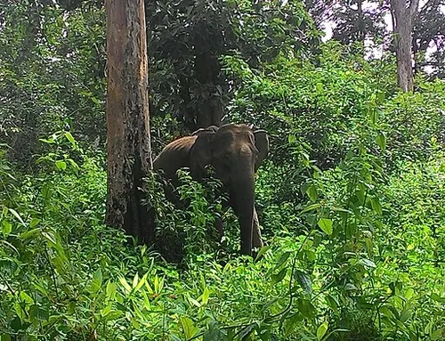
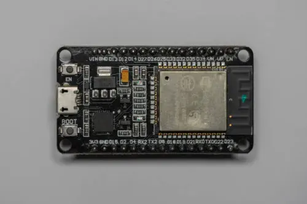
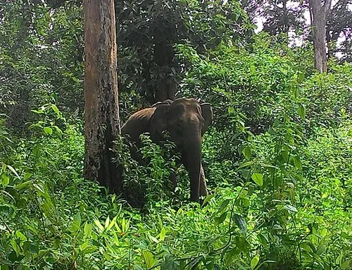
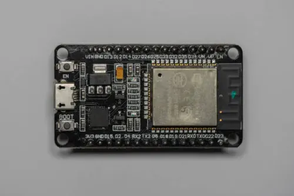
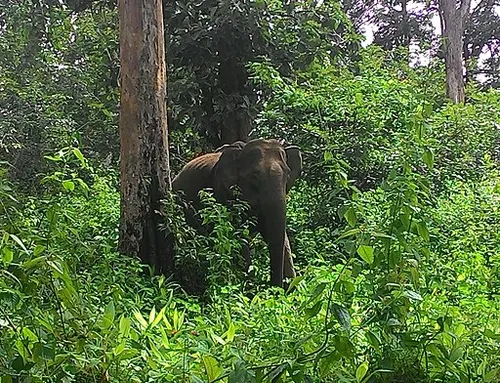
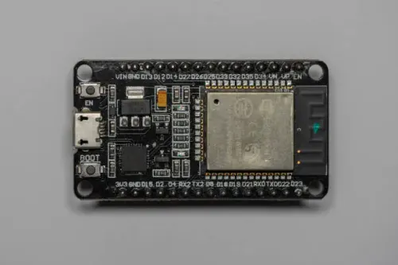

Gallery

 



The Civilian Protection Project From Wild Animals
TCPPFWA is a revolutionary IoT-based solution designed to protect civilians from wildlife encounters using real-time sensor alerts, automated systems, and active community participation.
This project aims to monitor and respond to potential wildlife threats—especially in forest border regions like Wayanad. The system utilizes multiple sensors and a Wi-Fi-enabled board to alert local communities in real-time.
DHT11 Sensor: Measures temperature and humidity. Essential for monitoring climate changes that might affect animal behavior.
Ultrasonic Sensor: Detects movement or obstacles within a defined range. Used to sense nearby animal presence or movement patterns.
Sound Sensor: Detects unexpected or abnormal sounds like elephant trumpets or wildlife roars, triggering the alert system.
Gas/Smoke Sensors: Helpful for detecting harmful gases or human interference like fire that can cause panic among animals.
Each sensor is individually calibrated and integrated with the board. Always connect sensors through a logic level converter if the board requires 3.3V logic (like the ESP8266 or ESP32).
The ESP8266/ESP32 is used to connect sensors and transmit data over Wi-Fi. It communicates with platforms like Adafruit IO or Blynk using MQTT or HTTP.
Key Notes:
Adafruit_Sensor, DHT, PubSubClient or BlynkSimpleEsp8266.Use resistors for pull-up/down logic where necessary, especially for analog sensors.
Problem: ESP8266 not connecting to Wi-Fi.
Solution: Double check SSID/password. Ensure board is close to the router. Use 2.4GHz band.
Problem: Sensors not reading values.
Solution: Check power and ground lines. Ensure pins match with the code. Add delays where needed to allow sensor response.
Problem: Data not showing on Blynk/Adafruit IO.
Solution: Confirm token/username/AIO key. Recheck feed/topic names.


We'll upload source code soon
Email: kdkcreate39@gmail.com
Phone: +91-7025046296